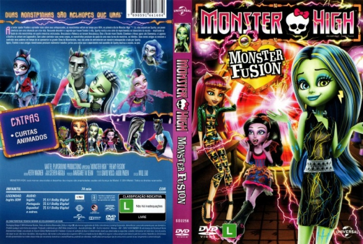

Outro Título:Monster High: Freaky Fusion
País:United States, 73 minutos
Idiomas falados:Entre Outros, Espanhol, Inglês, Português
Gênero(s):Animação
Diretor(s):William Lau, Sylvain Blais
Escritor(es):Keith Wagner
Codec:MPEG-2 (DVD)
Número: 5821


Certificado:L
Sinopse:
Ao tentar ajudar Frankie a aprender mais sobre seus antepassados, as monstrinhas por descuido voltam no tempo para 1814, no primeiro dia de Monster High. Lá, elas encontram Sparky, um jovem cientista com uma obsessão por criar vida. Buscando descobrir o segredo que trouxe Frankie a vida, Sparky realiza uma série de experimentos no laboratório da escola, resultando na fusão de oito monstrinhas em quatro monstras misturadas. Sem saber controlar seus novos corpos, as monstrinhas precisam da ajuda de uma nova turma de monstros, os híbridos. Será que elas resolveram tudo a tempo de se apresentar no grande Show do Bicentenário?
Elenco:


Tipo de mídia: DVD5,
Legendas: Inglês, Sem Legendas
Alugado: Não
Tela: Anamorphic Widescreen